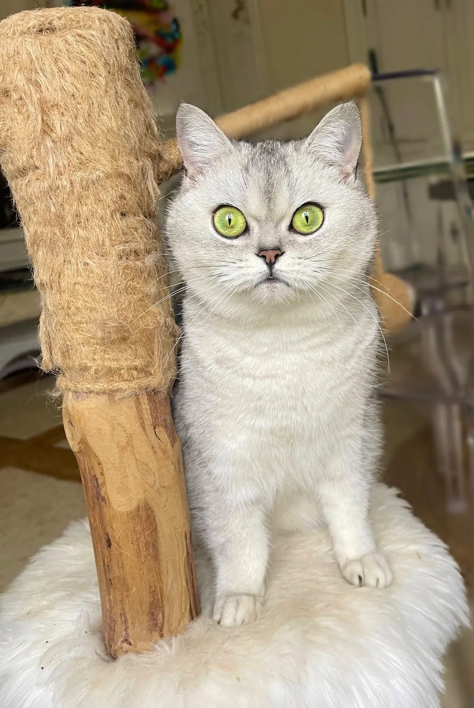
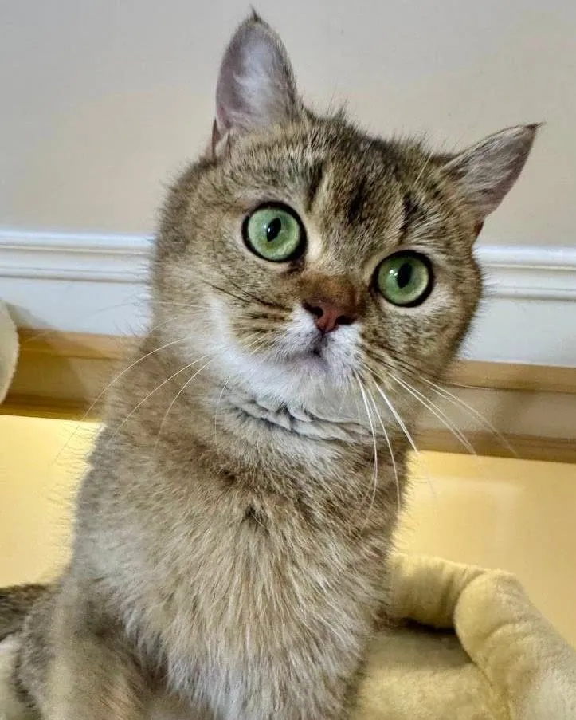

Nos femelles
La chatterie
Nos femelles
les reines du royaume
Les mamans de nos chatons : toute la douceur et la gentillesse du British, et des regards à faire fondre. Cliquez sur l'une d'elles pour découvrir sa fiche, ses photos et ses portées.
- 6 femelles
- 3 mamans en ce moment
- British Shorthair
Toutes nos femelles

Shorthair
Eden
La doyenne de nos reproductrices
Yeux verts

Shorthair
Maman en ce momentTina
Notre petite Tina, fille d'Eden
Yeux verts

Shorthair
Spooky
Toujours prête pour une nouvelle bêtise
Yeux verts

Shorthair
Maman en ce momentZara
On la reconnaît entre mille
Yeux vairons

Shorthair
Vesunna
Un vrai petit rayon de soleil
Yeux verts

Shorthair
Maman en ce momentAkira
Notre jeune petite maman
Yeux jaunes
En ce moment à la maison
Mamans en ce moment et aux petits soins
Leurs derniers chatons grandissent à la maison, auprès d'elles. Touchez une portée pour les découvrir.
En images
La bande des filles
Jeux, frimousses et petites bêtises. Touchez une photo pour l'agrandir.
Un coup de cœur ?
Nos chatons naissent et grandissent à la maison, auprès de leur maman. Découvrez ceux du moment, ou inscrivez-vous sur la liste d'attente pour être prévenu des prochaines naissances.
Voir aussi nos mâles et nos retraités.